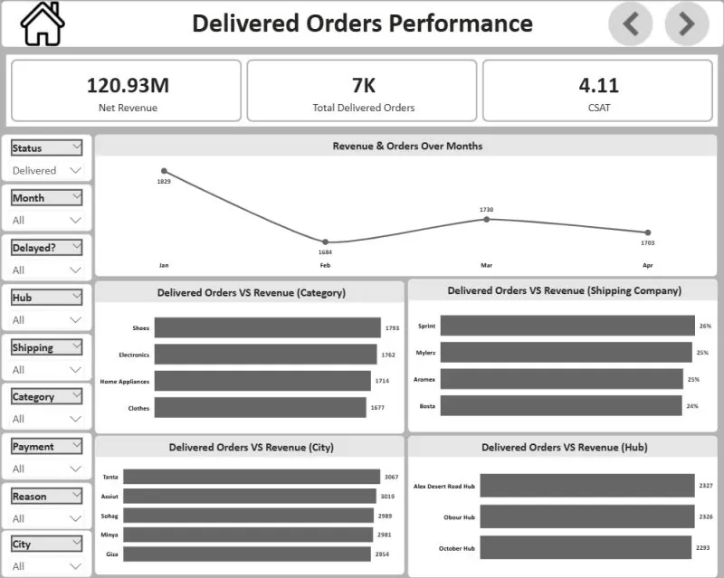

FILE 01 ٠١
E-Commerce Logistics & Operations
POWER BISTAR SCHEMADAXMATRIX HEATMAP

10,000+ orders traced end-to-end: revenue leakage, delivery delays, quality-control signals and cancellation errors — mapped across hubs and carriers until the leaks confessed.
READ THE CASE STUDY